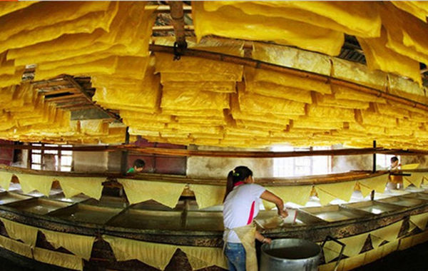
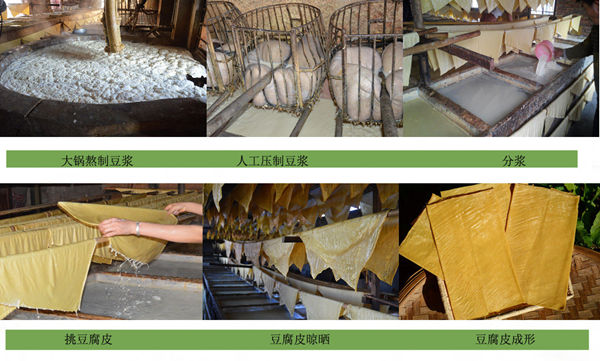
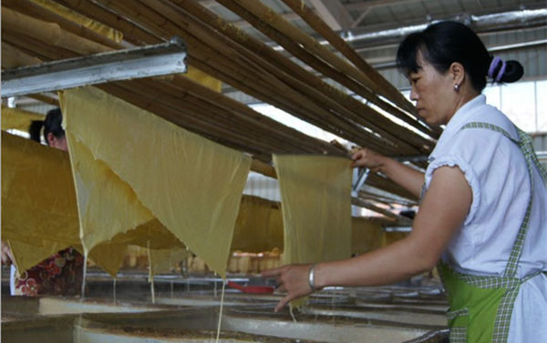

在云南石屏古城，人们有制作豆腐和豆腐皮的传统，这里的豆腐皮不用石膏点制，而是地下水，而只有在古城0.75平方公里的范围内的地下水才有效，石屏豆腐皮也由此得名，成为云南地方特产。
云南石屏豆腐皮延承传统的手工制作，零添加，百分之百原汁豆浆，懂得农民的坚持，容不下半点作假。云南石屏豆腐皮，呈淡黄色至金色，外表油亮光泽；质地细密、柔韧性好、久煮不化;味道鲜香滑嫩、柔嫩爽口。
虽然近年来逐步被机器所取代，产量更高，但村里生产的豆腐皮一直延承传统大锅熬制，人工豆浆压制过滤，生产出来的豆腐皮更柔韧，更香浓，口味更好。
石屏豆腐皮是云南久负盛名的一种豆制品，生产始于明朝初期，延承传统手工制作，慈禧时期被呈为“贡品”，原汁原味，闻得见的豆香。
一张真正的原汁豆腐皮需要10多道工序才能制作出来，经筛洗、脱皮、浸泡、制浆、煮浆、过滤、分浆、蒸浆、揭皮、折皮、凉晒等手工至干而成。
最传统传统手工制作，大锅熬制豆浆，手工压制过滤豆浆，豆浆更香醇，制作出的豆腐皮味道更好，口感更柔嫩。而工厂采用锅炉蒸汽熬制，豆浆用甩干机过滤，一天产量上千斤，口感无传统方法制作的好。同类豆制品特产推荐： 山东临沂特产农家自制腐竹
石屏豆腐皮汤用新鲜的石屏豆腐皮和酥肉制作而成，味道鲜美而且颇具营养，是居家必备的美味，老少皆宜，吃过后就会喜欢上它的滋味。
石屏豆腐皮、酥肉(可用肉丝或者肉沫替代)、葱和香菜以及少量的油和盐，将浸泡过豆腐皮切成丝，在锅中倒入适量油，再加适量水，煮沸后加入豆腐皮丝和酥肉煮到汤色发白，加入适量味精和盐，最后撒上一点葱花和香菜就大功告成了。
山东临沂特产沂蒙山区农家自制地瓜干
河南焦作特产温县垆土铁棍山药
云南特产天山雪莲果
韩国进口特产韩国农协蜂蜜柚子茶
选用浓豆浆，倒入平底锅中，加热时注意不要煮沸，锅中豆浆的表层就产生一层皮膜，用竹签等工具恰当地捞出并使之慢慢地干燥，但也有在未干燥时就加以烹调食用的。此膜捞出后锅中会再次产生皮膜，继续捞出，这样如此反复，豆浆的浓度会逐渐稀薄，要适当地给予补充。 来源：中国食品信息网
各地对豆腐皮的叫法不甚一致，有如下两种：
一是在豆浆煮沸之后表面形成天然油膜“挑”起来晾干成的豆腐皮，也叫“油皮”、“腐竹”、“豆腐衣”、“豆笋”，本条目为了辨义将用“油皮”标注；
二是压制成的豆腐皮（千张、干豆腐），与豆腐干近似，但较薄（比油皮则明显较厚，可以看成超薄的豆腐干）、稍干，有时还要加盐，口味与豆腐有区别，本条目为了辨义将用“千张”标注。
二者虽都叫“豆腐皮”，但形状、成分、口味、菜肴做法均有较大差别。但举一例，上海人吃素鸡和素鸭，素鸡就是千张卷成，而素鸭则是油皮卷成。
”油皮“和”千张“都是常见的豆制品，但是有意思的是在全国各地他们的名词往往让人烦恼，笔者曾经听过“豆腐皮”，“豆皮”，“腐皮”，“油皮”，“腐竹”，“千张”，“百叶”“豆笋”，“干豆腐”，可想而见全国应该还有更多的名称称呼这两种让人喜爱的豆制品。在安徽湖北等地方，“油皮“和”千张“都是常见的豆制品，”油皮”就是当地的豆腐皮。有趣的是在中国北方一些”千张“被称为豆腐皮的地区，当地其实并不吃“油皮”，仅吃“千张”。而在东北，他们吃的“干豆腐”就是千张。而在南方福建等地，他们吃的”豆腐皮“其实是包括了”油皮“和”腐竹“两种豆制品。湖南一般包括“豆笋”（腐竹）、“千浆皮子”（百页）、“豆油皮子”（油皮）三种。
{kind=link}
{kind=link}
{kind=link}
{kind=link}
{kind=link}
{kind=link}
{kind=link}